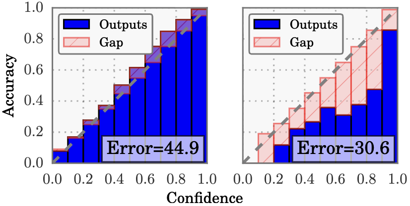
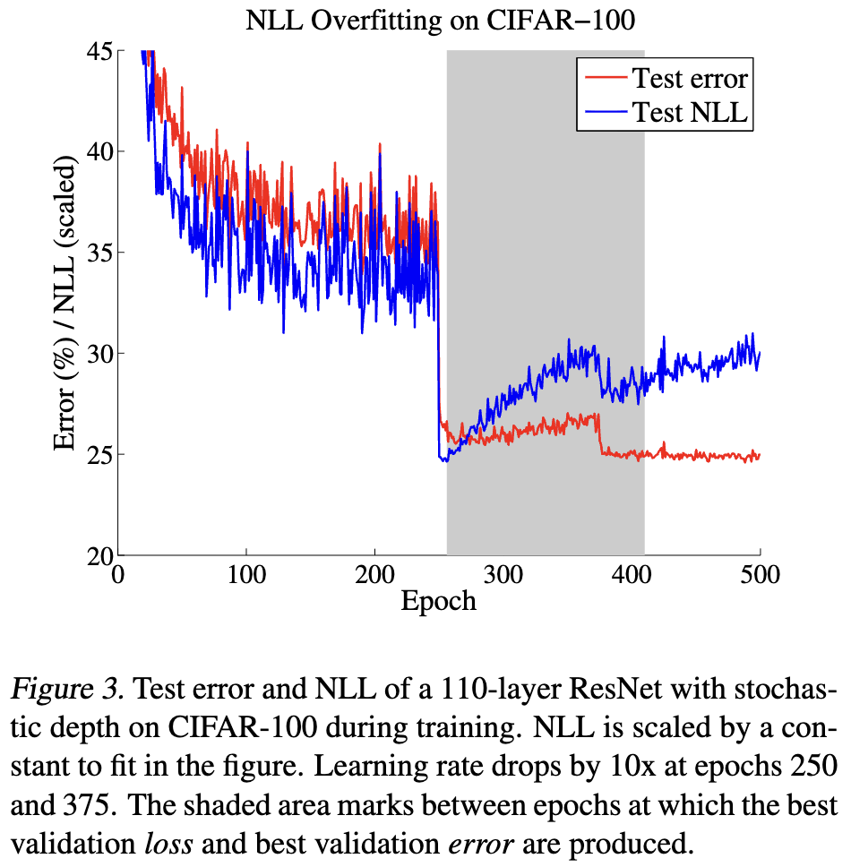

Calibration
On Calibration of Modern Neural Networks (ICML, 2017)
https://fernandoperezc.github.io/Advanced-Topics-in-Machine-Learning-and-Data-Science/Fluri.pdf https://proceedings.mlr.press/v70/guo17a.html
Perfect calibration
Let \(h\) be a neural network with \(h(X) = (\hat{Y}, \hat{P})\), where \(\hat{Y}\) is the class prediction and \(\hat{P}\) is its associated confidence.
We define perfect calibration as: $$ \Pr(\hat{Y} = Y \mid \hat{P} = p) = p, \quad \forall p \in [0,1] $$
For a well-calibrated neural network, the probability associated with the predicted label (average confidence) is similar to the average accuracy.
Reliability Diagram
Plot sample accuracy as a function of confidence. Perfect calibrated diagram plots identity function.
Let \(B_m\) be set of indices of samples whose prediction confidence falls into interval \(I_m = (\frac{m-1}{M}, \frac{m}{M}]\).
The average accuracy of \(B_m\) is \(\mathrm{acc}(B_m) = \frac{1}{\lvert B_m \rvert} \sum_{i\in B_m} \mathbb{I}(\hat{y}_i = y_i)\)
The average confidence within \(B_m\) is \(\mathrm{conf}(B_m) = \frac{1}{\lvert B_m \rvert} \sum_{i\in B_m} \hat{p}_i\). \(\hat{p}_i\) is the confidence for sample \(i\).
Perfect calibrated model would have \(\mathrm{acc}(B_m) = \mathrm{conf}(B_m)\)
Model calibration
Difference in expectation between confidence and accuray is one scalar summary of miscalibration.

ECE
Expected calibrated error approximate the above.
MCE
Maximum calibrated error. An upper bound of the deviationle="width:42px"
The classification networks must not only be accurate but also indicate when they are likely to be incorrect. A network should provide a calibrated confidence measure in addition to prediction.
Observing miscalibration
- model capacity
- lack of regularization
NLL
Negative log likelihood:
neural network can overfit to NLL w/o overfitting to 0/1 loss

Note
Before epoch 250 — large learning rate. The optimizer takes big steps. Near the bottom of the basin, big steps overshoot: the parameters jump past the minimum, land on the other side, jump back, and keep oscillating around the basin without settling into it. The loss can't get below a floor set by how big those jumps are. This is why both error and NLL plateau for a stretch — not because the model has learned all it can, but because the steps are too coarse to make fine progress.
At epoch 250 — learning rate dropped (typically ×0.1). Suddenly the steps are ~10× smaller. Now the ball stops bouncing over the fine structure and actually settles into the basin. The oscillation damps out, the optimizer can exploit the local curvature, and the loss drops to a much lower floor almost immediately. Because better-fit weights mean both lower loss and sharper, more correct decisions, NLL and error fall together.
Understanding deep learning requires rethinking generalization